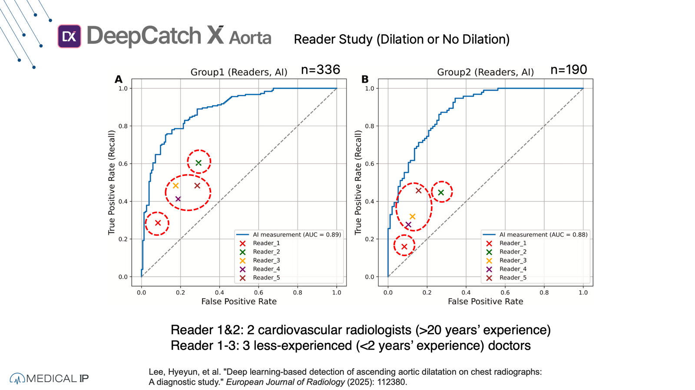
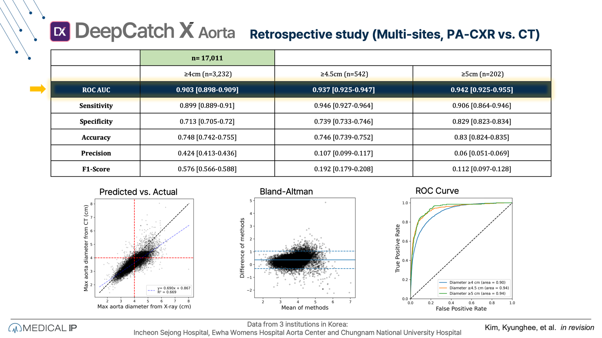
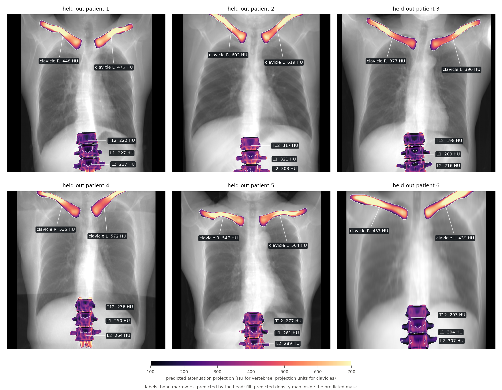
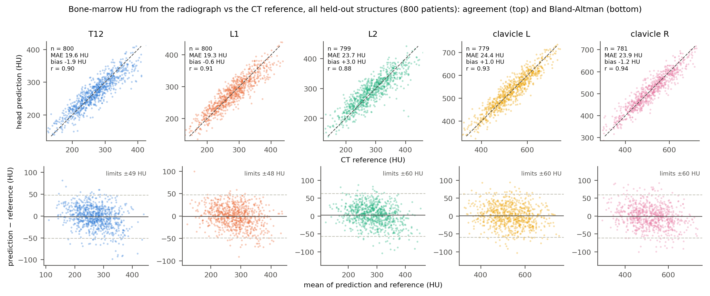
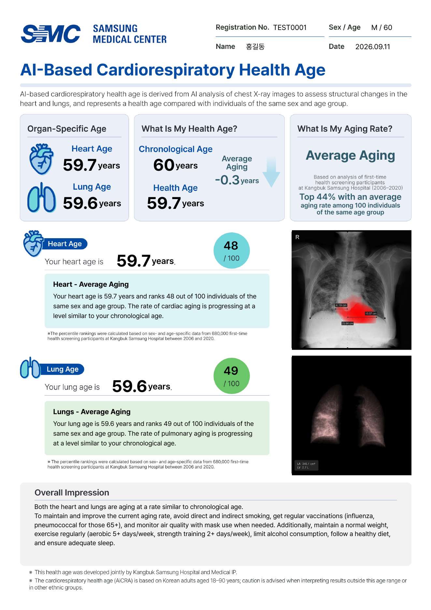
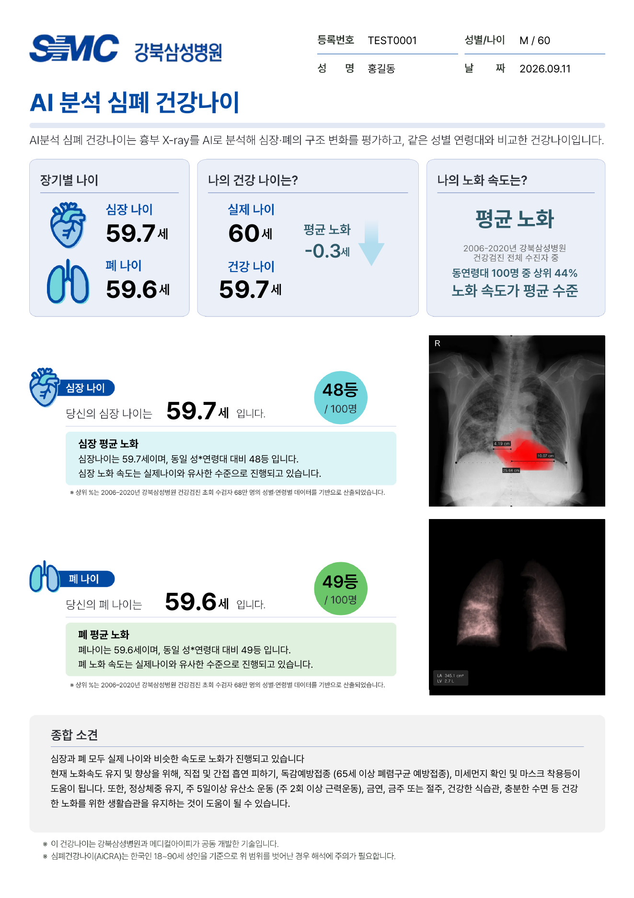

Research Innovation
The core research contribution is a conditional diffusion model that extracts 2D aorta projections from X-rays. A 3D volumetric extension via Latent Diffusion with a 3D VAE, Flash Attention, and window attention for local context is proposed.
Training uses a ConcatConditionedUNet with noise prediction objective (MSE loss), conditioned on X-ray input via channel concatenation. 4-GPU DDP training (NCCL) with gradient accumulation for a large effective batch, mixed precision (FP16 + GradScaler), and cosine LR schedule with warmup.



20 years) and three less-experienced doctors — on ascending-aortic-dilation detection; published in European Journal of Radiology 2025" />
Rectified-Flow Osteoporosis Screening
For opportunistic osteoporosis screening, the latest generation of the stack replaces a deployed adversarial radiograph-to-CT-attenuation translator with a conditional rectified-flow model that reads a chest radiograph and returns masks, CT attenuation projections, and bone-marrow HU for T12–L2 and both clavicles from one network, with the clinical mean-HU error inside the training objective.


BioAge: R to C++
The platform estimates biological age from chest X-ray biomarkers, outputting 52 clinical fields including risk scores and life expectancy. The original R algorithm was ported to production C++ and compiled into a shared binary for integration into the deployment pipeline. Achieves numerical equivalence to the original R implementation. Deployed across check-up centers, underpinning the qCXR-bioage study with Kangbuk Samsung Hospital (Radiology: Cardiothoracic Imaging, 2026).

